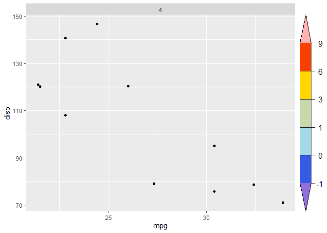
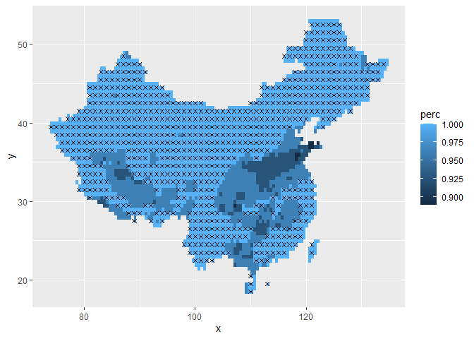
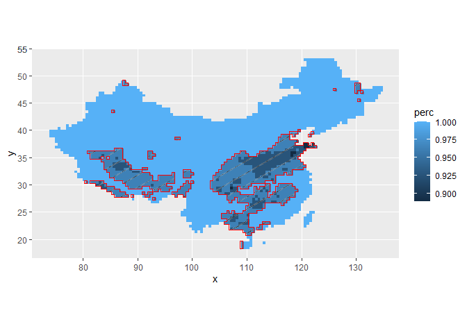

Installation
You can install the development version of gg.layers from GitHub with:
# install.packages("remotes")
remotes::install_github("rpkgs/gg.layers")Example
self-made colorbar
library(gg.layers)
#> Registered S3 method overwritten by 'gg.layers':
#> method from
#> print.gtable gtable
library(ggplot2)
library(rcolors)
brk <- c(-Inf, -1, 0, 1, 3, 6, 9, Inf)
nbrk <- length(brk) - 1
cols <- get_color(rcolors$amwg256, nbrk)
g <- make_colorbar(
at = brk, col = cols, height = 1,
tck = 0.4,
space = "right",
legend.text.location = c(0.3, 0.5),
legend.text.just = c(0.5, 0.5),
# legend.text = list(fontfamily = "Times", cex = 1.1),
hjust = 0.05
)
#> Warning in grid.Call(C_stringMetric, as.graphicsAnnot(x$label)): Windows字体数据
#> 库里没有这样的字体系列
p <- ggplot(mtcars %>% subset(cyl == 4), aes(mpg, disp)) + geom_point() +
facet_wrap(~cyl) +
theme(legend.position = "none")
p + g
#> Warning in grid.Call.graphics(C_text, as.graphicsAnnot(x$label), x$x, x$y, :
#> Windows字体数据库里没有这样的字体系列
significant regions
data("d_trendPerc")
d_mask <- mutate(d_trendPerc, mask = perc <= 0.99) # %>% as.data.frame()
# 1. geom_signPoint
ggplot(data = d_mask, aes(x, y)) +
geom_raster(aes(fill = perc)) +
geom_signPoint(aes(mask = !mask), fact = 2, shape = 4)
# 2. geom_signHatch
ggplot() +
geom_raster(data = d_trendPerc, aes(x, y, fill = perc)) +
# geom_sf(data = shp) +
geom_signHatch(data = d_mask, aes(x, y, mask = mask), color = "red")
#> Warning: Computation failed in `stat_sign_hatch()`:
#> 不存在叫'rgeos'这个名字的程辑包
# 3. stat_signPattern
ggplot() +
geom_raster(data = d_trendPerc, aes(x, y, fill = perc)) +
stat_signPattern(
data = d_mask, aes(x, y, mask = mask),
fill = "transparent", color = "red",
pattern_density = 0.02
)